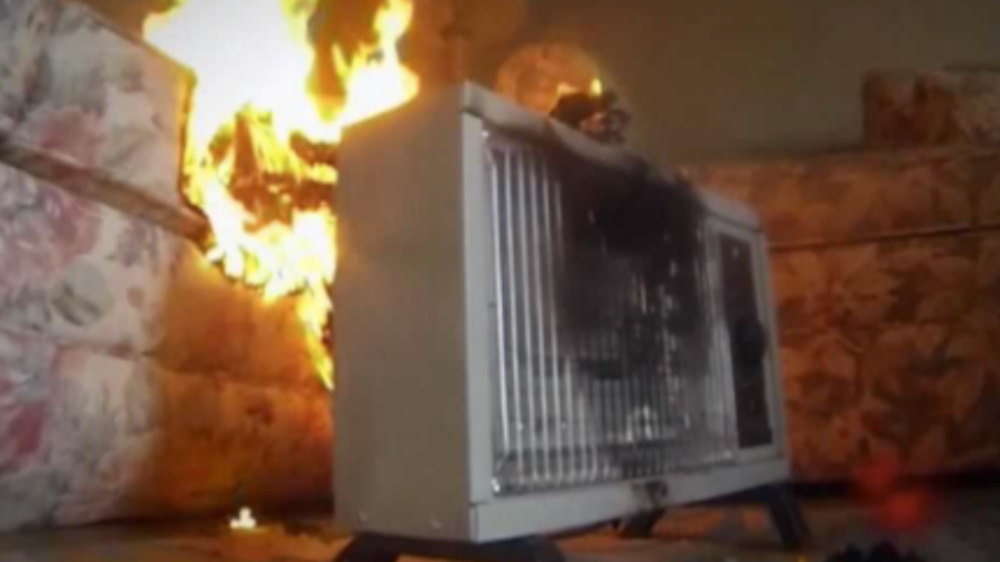

We provide professional fire damage restoration and emergency response services that help homeowners recover quickly when heating equipment leads to unexpected fire damage.
As temperatures drop, many homeowners turn to portable heaters to stay warm. While convenient, space heaters are one of the leading causes of residential fires during colder months. Understanding the real space heater fire risks and how to reduce them can help protect both your property and your family from preventable damage.
Space heaters are often placed in bedrooms, offices, garages, and other areas where central heating may not feel sufficient. Because they operate at high temperatures and are frequently positioned near furniture or fabric, they create a significant ignition hazard.
Many winter fires begin when heaters are placed too close to curtains, bedding, upholstered furniture, or paper products. These materials can ignite quickly when exposed to direct heat. According to the National Fire Protection Association, heating equipment is one of the leading causes of home fires during winter months, making caution especially important when using portable units.
Electrical overload is another common issue. Plugging space heaters into extension cords or power strips can overheat wiring and increase the likelihood of electrical fires. When circuits become stressed, sparks or overheating components may trigger flames before homeowners realize a problem exists.
While modern heaters often include safety features, misuse remains a leading factor in fire incidents. Some of the most frequent causes include:
Even tipping a heater over can cause immediate ignition if the unit lacks an automatic shutoff feature. Many homeowners underestimate how quickly heat can transfer to nearby objects. A few minutes of exposure can be enough to start a fire.
When a heating-related fire occurs, rapid response is essential. Professional fire damage restoration helps address smoke, soot, and structural concerns before secondary damage develops.
Small warning signs often appear before a major incident. Flickering lights, warm outlets, tripped breakers, or a burning smell near a heater may indicate electrical strain. Discoloration on cords or wall outlets is another red flag.
In some cases, smoke damage can occur without large visible flames. Soot accumulation on walls or ceilings may signal that a minor ignition occurred and self-extinguished. Addressing these signs early helps prevent future events and reduces the need for extensive fire damage repair.
Routine inspection of heaters before each season can reduce risks. Checking cords, testing safety shutoff features, and ensuring proper placement all contribute to safer operation.
When space heater fires occur, the visible flames are only part of the problem. Smoke and soot particles can travel throughout the home, affecting walls, ceilings, flooring, and HVAC systems. Even small fires may leave lingering odors and contamination.
Soot residue can stain surfaces and corrode materials if not cleaned promptly. Smoke particles may also circulate through ductwork, impacting indoor air quality long after the fire is extinguished. Professional cleanup teams use specialized equipment to remove residues and prevent further damage through comprehensive restoration services.
Homeowners often underestimate how quickly smoke spreads. Acting immediately after a fire limits long-term structural and cosmetic damage.
Safety and health come first. Families want to know their home is secure and free from harmful smoke particles. Air quality concerns are especially important for children, older adults, and individuals with respiratory conditions.
Property restoration is another top concern. Fire can damage drywall, insulation, framing, and personal belongings within minutes. The cleanup process may involve debris removal, deodorization, structural drying, and reconstruction. Working with a team experienced in both mitigation and rebuilding simplifies the process and reduces delays.
Insurance questions also surface quickly. Documentation, photo evidence, and professional assessment reports are essential when filing claims. According to the U.S. Fire Administration, heating equipment remains a significant contributor to residential winter fires, reinforcing the importance of proper reporting and restoration following an incident.
Prevention begins with safe usage. Keeping heaters at least three feet from flammable materials significantly lowers ignition risk. Always plug units directly into wall outlets rather than extension cords or power strips.
Additional safety steps include:
Installing and maintaining working smoke alarms throughout the home adds another layer of protection. Early detection can prevent small incidents from becoming major disasters.
Even minor heater fires can create hidden damage behind walls or inside duct systems. Professional restoration teams assess structural integrity, remove contaminated materials, and ensure the property is safe for reentry. Specialized drying and deodorization equipment helps eliminate lingering smoke odors and moisture left behind by firefighting efforts.
For more support after a heater-related fire, SWAT Restoration provides fast-response fire damage restoration, smoke cleanup, and reconstruction services throughout North Texas. Our team acts quickly to secure your property, document damage for insurance purposes, and guide you through every stage of recovery. When heating equipment leads to unexpected fire damage, having an experienced restoration team on your side brings clarity and confidence during a difficult situation.